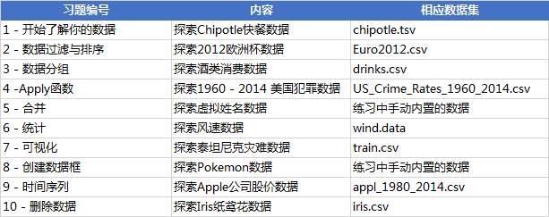

练习1-开始了解你的数据,探索Chipotle快餐数据
1)将数据集存入一个名为chipo的数据框内
import pandas as pd
#sep="\t" 表示以tab（制表符）为分隔符
chipo = pd.read_csv('Pandas_exercises-master/chipotle.tsv',sep='\t')
2)查看前10行内容(head())
chipo.head(10)
3)数据集中有多少个列columns？(shape[])
#.shape[1]返回列数,.shape[0]返回行数
#len(df) out:[* rows x * columns]
chipo.shape[1]
4)打印出全部的列名称(colums)
chipo.columns
5)数据集的索引是怎样的？(index)
chipo.index
6)!!!被下单数最多商品item是什么?(sum&value_counts)
这两种方法结果为啥不同呢?解答
#不准确item=chipo[['item_name','quantity']].groupby(by=['item_name']).sum().sort_values(by=['quantity'],ascending=False).head(1)
'''
value_counts() is, count values without looking at what the value actually is. So 1 and 100 on that column will be treated as the same -- you have one count.
sum(), however, sum up the columns. So if you have two rows, one is 1 and another is 100, your sum is 101 while the count is 2.
'''
chipo['item_name'].value_counts().head()
#同理 求在choice_description中，下单次数最多的商品是什么？
chipo['choice_description'].value_counts().head()
7)!!!在item_name这一列中，一共有多少种商品被下单？(unique())
#1 unique()统计list、series中的不同值都是啥,返回的是list.
#2 nunique()可直接统计dataframe中每列的不同值的个数,也可用于series,但不能用于list.返回的是不同值的个数.
chipo.item_name.nunique()
#同理 在该数据集对应的时期内，一共有多少订单？
chipo['order_id'].nunique()
8)一共有多少商品被下单？(求总和)
chipo['quantity'].sum()
9)将item_price转换为浮点数(.apply(function))
#x[1:] 相当于取$后面的数字 $11.0->11.0
chipo['item_price'] = chipo['item_price'].apply(lambda x: float(x[1:]))
10)在该数据集对应的时期内，收入revenue是多少？
chipo['quantity'] * chipo['item_price']).sum()
11)每一单order对应的平均总价是多少？(.mean())
#df.mean()求平均值
chipo['item_price_sum'] = chipo['quantity'] * chipo['item_price']
#不会有6)的问题 因为求和是准确的
chipo[['order_id','item_price_sum']].groupby(by=['order_id']).sum().mean()
练习2-数据过滤与排序,探索2012欧洲杯数据
1)将数据集命名为euro12
#已经是表不用设置sep
import pandas as pd
euro12 = pd.read_csv('Pandas_exercises-master/Euro2012.csv')
2)将数据集中的列Team, Yellow Cards和Red Cards单独存为一个名叫discipline的数据框(df[[]])
#df['*']是不包含列索引的series,df[['*']]是包含列索引的dataframe.
#所以单中括号只可以写一个列
discipline = euro12[['Yellow Cards','Red Cards']]
3)对数据框discipline按照先Red Cards再Yellow Cards进行排序(.sort_values())
discipline.sort_values(by=['Red Cards','Yellow Cards'],ascending = False)
4)找到进球数Goals超过6的球队数据
euro12[euro12.Goals>6]
5)选取以字母G开头的球队数据
euro12[euro12.Team.str.startswith('G')]
6)用loc,iloc,ix索引数据
#loc：通过行标签索引数据
#iloc：通过行号索引行数据
#ix：通过行标签或行号索引数据（基于loc和iloc的混合）用ix就得了
#选取前7列
euro12.iloc[:,0:7]
#选取除了最后3列之外的全部列
euro12.iloc[:,0:-3]
#找到英格兰(England)、意大利(Italy)和俄罗斯(Russia)的射正率(Shooting Accuracy)
euro12.loc[euro12['Team'].isin(['England','Italy','Russia']),['Team','Shooting Accuracy']]
练习3-数据分组,探索酒类消费数据
1)将数据框命名为drinks
import pandas as pd
drinks = pd.read_csv('Pandas_exercises-master/drinks.csv')
2)哪个大陆continent平均消耗的啤酒beer更多？
#选列,分组,求平均,排序
drinks[['continent','beer_servings']].groupby(by='continent').mean().sort_values(by='beer_servings',ascending=False).head(1)
#更好的写法
drinks.groupby('continent').beer_servings.mean().sort_values(ascending=False)
3)打印出每个大陆continent的红酒消耗wine_servings的描述性统计值(.describe())
drinks[['continent','wine_servings']].groupby(by='continent').describe()
4)打印出每个大陆每种酒类别的消耗平均值(查一个统计值agg)
drinks.groupby('continent').mean()
#打印出每个大陆每种酒类别的消耗中位数
drinks.groupby('continent').median()
#打印出每个大陆对spirit饮品消耗的平均值，最大值和最小值
drinks.groupby('continent').spirit_servings.agg(['mean', 'min', 'max'])
练习4-Apply函数,探索1960 - 2014 美国犯罪数据
1)将数据框命名为crime
import pandas as pd
crime = pd.read_csv('Pandas_exercises-master/US_Crime_Rates_1960_2014.csv')
2)每一列column的数据类型是什么样的？(info())
crime.info()
3)将Year的数据类型转换为datetime64(.to_datetime(crime.Year, format=’%Y’))
crime.Year=pd.to_datetime(crime.Year, format='%Y')
crime.info()
4)将列Year设置为数据框的索引(.set_index(‘Year’,drop = True))
crime.set_index('Year',drop = True)
5)删除名为Total的列(del)
del crime['Total']
6)按照Year（每十年）对数据框进行分组并求和(resample)
#重新采样，是对原样本重新处理的一个方法，是一个对常规时间序列数据重新采样和频率转换的便捷的方法
crimes = crime.resample('10AS').sum()
crimes['Population'] =crime.resample('10AS').max().Population #人口是累计数，不能直接求和
7)何时是美国历史上生存最危险的年代？(.idxmax())
#找出column最大的索引
crime.idxmax(0)
练习5-合并,探索虚拟姓名数据
– 创建DataFrame
– 将上述的DataFrame分别命名为data1, data2, data3
– 将data1和data2两个数据框按照行的维度进行合并，命名为all_data
– 将data1和data2两个数据框按照列的维度进行合并，命名为all_data_col
– 打印data3
– 按照subject_id的值对all_data和data3作合并
– 对data1和data2按照subject_id作连接
– 找到 data1 和 data2 合并之后的所有匹配结果
练习6-统计,探索风速数据
– 将数据作存储并且设置前三列为合适的索引
– 2061年？我们真的有这一年的数据？创建一个函数并用它去修复这个bug
– 将日期设为索引，注意数据类型，应该是datetime64[ns]
– 对应每一个location，一共有多少数据值缺失
– 对应每一个location，一共有多少完整的数据值
– 对于全体数据，计算风速的平均值
– 创建一个名为loc_stats的数据框去计算并存储每个location的风速最小值，最大值，平均值和标准差
– 创建一个名为day_stats的数据框去计算并存储所有location的风速最小值，最大值，平均值和标准差
– 对于每一个location，计算一月份的平均风速
– 对于数据记录按照年为频率取样
– 对于数据记录按照月为频率取样
练习7-可视化,探索泰坦尼克灾难数据
– 将数据框命名为titanic
– 将PassengerId设置为索引
– 绘制一个展示男女乘客比例的扇形图
– 绘制一个展示船票Fare, 与乘客年龄和性别的散点图
– 有多少人生还？
– 绘制一个展示船票价格的直方图
练习8-创建数据框,探索Pokemon数据
– 创建一个数据字典
– 将数据字典存为一个名叫pokemon的数据框中
– 数据框的列排序是字母顺序，请重新修改为name, type, hp, evolution, pokedex这个顺序
– 添加一个列place[‘park’,’street’,’lake’,’forest’]
– 查看每个列的数据类型
练习9-时间序列,探索Apple公司股价数据
– 读取数据并存为一个名叫apple的数据框
– 查看每一列的数据类型
– 将Date这个列转换为datetime类型
– 将Date设置为索引
– 有重复的日期吗？
– 将index设置为升序
– 找到每个月的最后一个交易日(business day)
– 数据集中最早的日期和最晚的日期相差多少天？
– 在数据中一共有多少个月？
– 按照时间顺序可视化Adj Close值
练习10-删除数据,探索Iris纸鸢花数据
1)将数据集存成变量iris
import pandas as pd
import numpy as np
iris = pd.read_csv('Pandas_exercises-master/iris.data')
2)创建数据框的列名称[‘sepal_length’,’sepal_width’, ‘petal_length’, ‘petal_width’, ‘class’]
iris.columns = ['sepal_length','sepal_width', 'petal_length', 'petal_width', 'class']
3)数据框中有缺失值吗？(isnull())
iris.isnull().sum()
4)将列petal_length的第10到19行设置为缺失值
iris.petal_length.loc[10:19]=np.nan
5)将petal_lengt缺失值全部替换为1.0(.fillna())
#inplace=True改变表格
iris.petal_length.fillna(1 , inplace=True)
6)将数据框前三行设置为缺失值
iris.loc[0:2]=np.nan
7)删除有缺失值的行(.dropna(how=’any’))
iris = iris.dropna(how='any')
8)重新设置索引(.reset_index())
iris = iris.reset_index(drop = True)#加上drop参数，原有索引就不会成为新的列